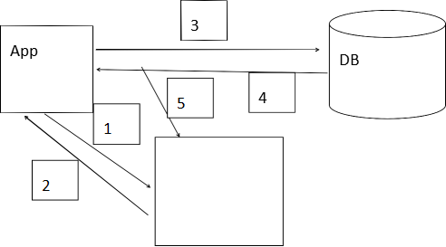

MyBatis缓存原文出处:本文由博客园博主suhaha提供。
原文连接:https://www.cnblogs.com/suhaha/p/11798380.html
- 应用程序和数据库交互的过程是一个相对比较耗时的过程。
- 缓存存在的意义 :让应用程序减少对数据库的访问,提升程序运行效率。
- MyBatis 中默认SqlSession 缓存开启
- 3.1同一个 SqlSession 对象调用同一个<select>时,只有第一次访问数据库,第一次之后把查询结果缓存到SqlSession 缓存区(内存)中
- 3.2缓存的是statement 对象.(简单记忆必须是用一个<select>).
注意在myabtis 中是一个<select>对应一个statement 对象 。
- 3.3有效范围必须是同一个SqlSession 对象
缓存流程
- 步骤一: 先去缓存区中找是否存在statement
- 步骤二:返回结果
- 步骤三:如果没有缓存statement 对象,去数据库获取数据
- 步骤四:数据库返回查询结果
- 步骤五:把查询结果放到对应的缓存区中

SqlSessionFactory 缓存
- 又叫 二级缓存
- 有效范围
同一个factory 内哪个SqlSession 都可以获取
- 什么时候使用二级缓存:
当数据频繁被使用,很少被修改
- 使用二级缓存步骤
1)在mapper.xml 中添加
2)如果不写readOnly=”true”需要把实体类序列化
<cache readOnly="true"></cache>
readonly 表示是否允许对二级缓存数据进行读取。
当SqlSession 对象close()时或 commit()时会把 SqlSession 缓存的数据刷(flush)到SqlSessionFactory 缓存区中